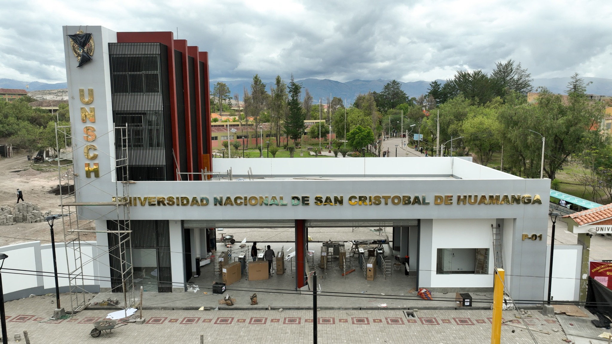
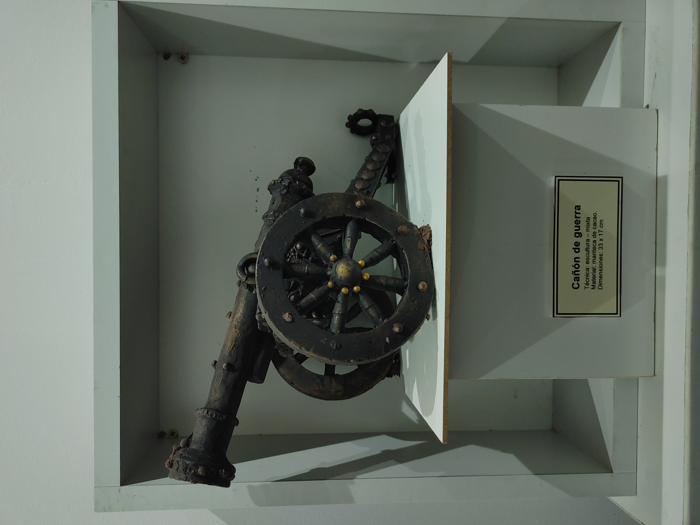
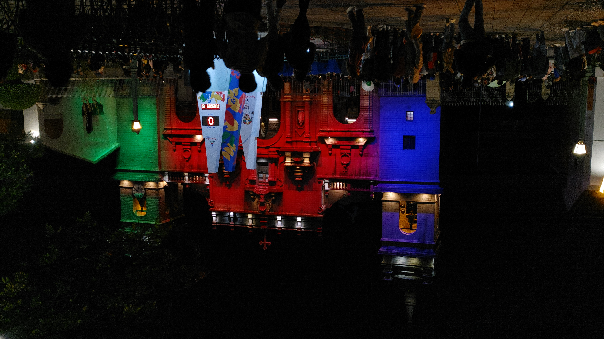

Universidades
Vida académica y campus con historia.


Vida académica y campus con historia.

Patrimonio arqueológico y arte vivo.

Puca picante, qapchi y más sabores andinos.

Rutas barrocas, tallas y festividades.

Retablos, tejidos y cerámica con alma.

Horizontes que se quedan en la retina.